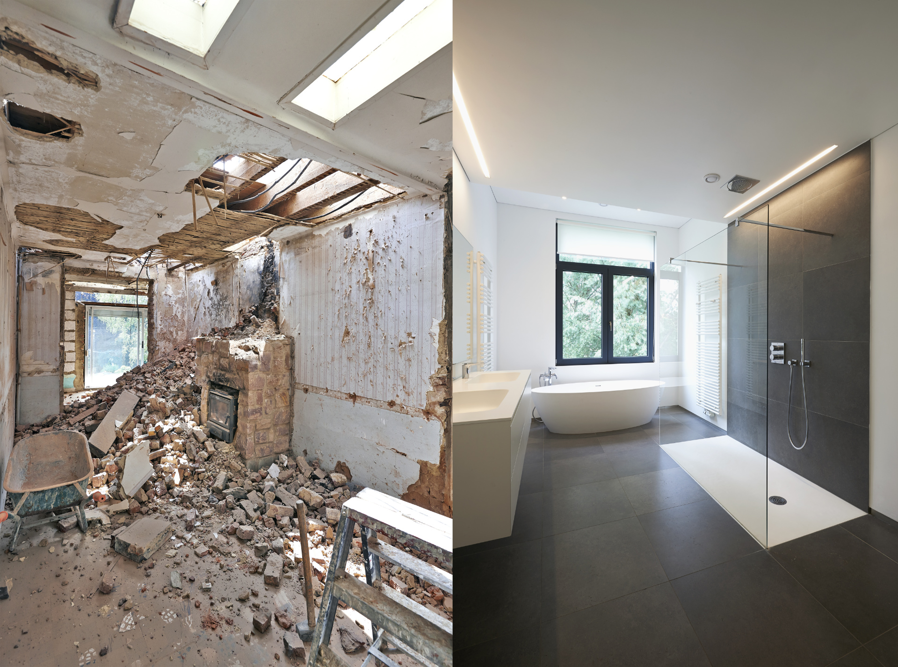
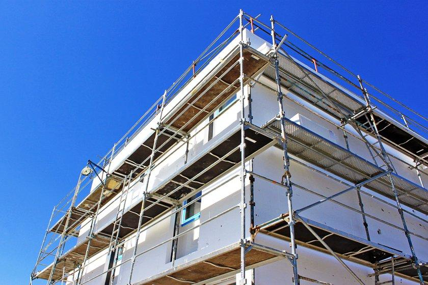
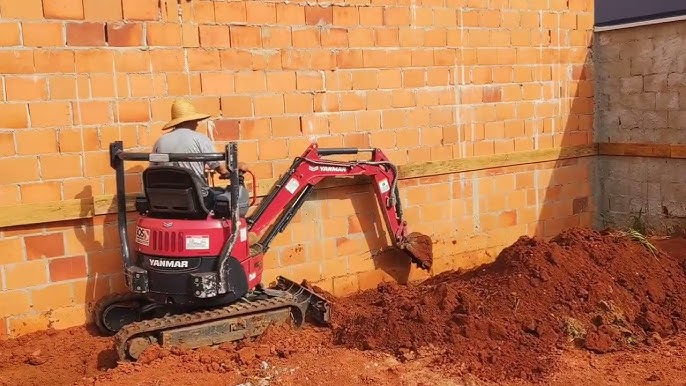
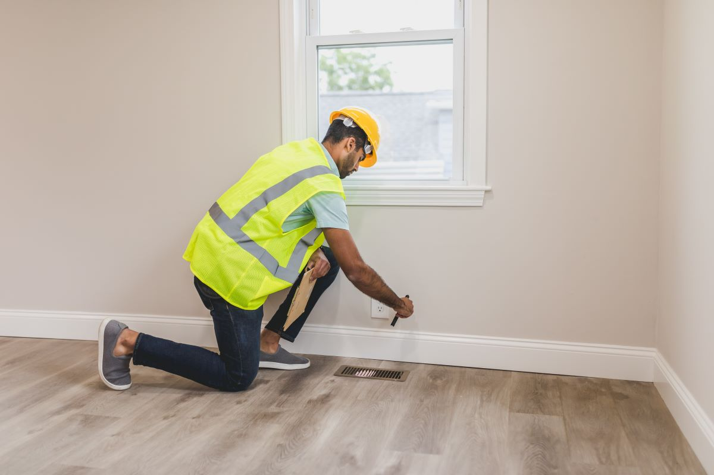
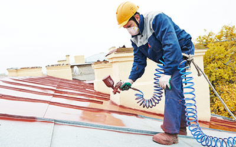
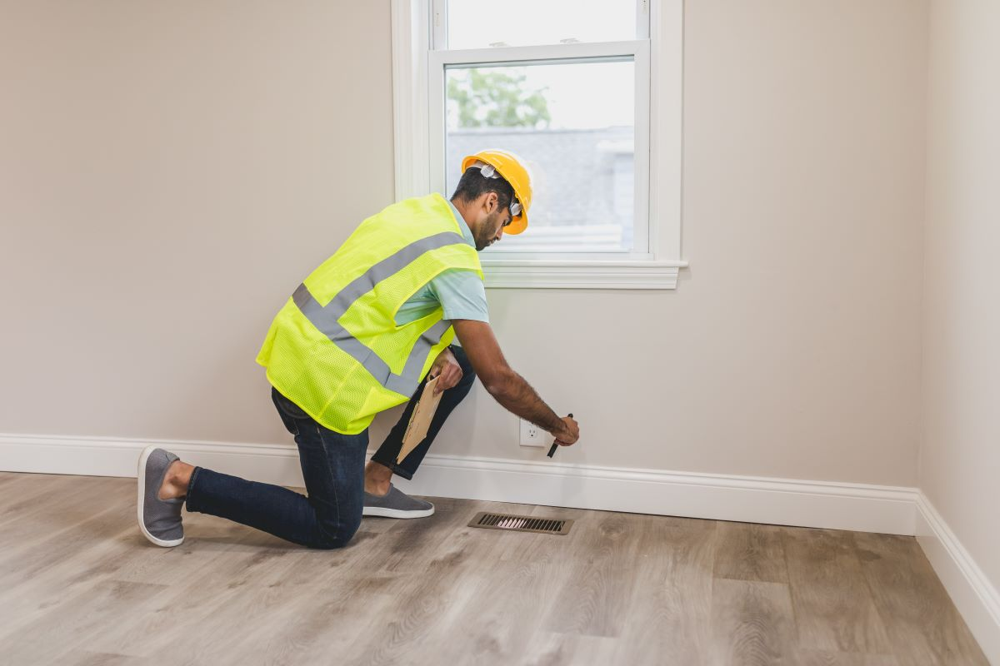
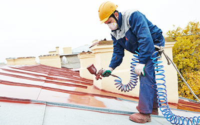

Os Nossos Serviços

Remodelações e Reabilitação
Remodelação total ou parcial de habitações, cozinhas e casas de banho. Reorganização de espaços interiores e reabilitação de edifícios antigos.

Construção de Casas Novas
Construção de moradias e edifícios habitacionais, desde as fundações até aos acabamentos finais, com gestão completa da obra.

Coberturas e Fachadas
Construção e reparação de telhados, impermeabilizações, aplicação de capoto (ETICS), revestimentos e pintura exterior.

Arranjos Exteriores
Muros e vedações, pavimentos exteriores, garagens, anexos, terraplanagens e sistemas de drenagem.
Serviços Complementares
Leitura e interpretação de projetos, acompanhamento técnico da obra, cumprimento das normas de segurança e apoio na escolha de materiais.
 


